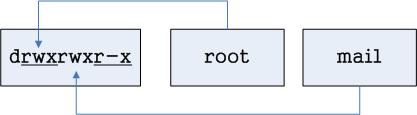

第二章 Linux 作業系統基本操作
指令使用方式
-
文字介面開啟方式
- Terminal 終端機視窗
- 圖形介面下開啟文字介面方式
- Console 文字介面切換
- <Ctrl>+<Alt>+<F2>~<F6>
- <Ctrl>+<Alt>+<F6>
- Terminal 終端機視窗
-
命令提示字元
- [使用者身份＠主機名稱 現在工作目錄]#
- #: 管理者身份
- $: 一般使用者身份
-
指令下法
- #指令名稱 參數 引數
- 指令名稱：Linux 指令，例如： ls
- 參數：改變指令執行規則，例如：-h or --help
- 引數：指令執行對象，例如：/etc/hosts
- 範例：
#cd ~ 切換目錄到家目錄 #ls -al 列出當下的目錄內容 #ls -al /var/log 列出 /var/log/ 目錄底下的子目錄與檔案
檔案與目錄管理
-
Linux 檔案與目錄架構
-
最上層根目錄－「 / 」
-
沒有 C: D: E: …
-
Linux 標準階層目錄(FHS)說明：
目錄名稱 使用說明 / 根目錄：Linux 最頂層目錄 /root Linux 最大管理者 root 的家目錄 /home Linux 一般使用者家目錄 /etc Linux 軟體設定檔目錄 /dev Linux 硬體設定檔目錄 /lib、/lib64 Linux 涵式庫目錄 /bin、/sbin Linux 系統或軟體執行檔目錄 /usr Linux 應用軟體套件安裝目錄 /mnt、/media Linux 可移動媒體檔案系統掛載點目錄 /var Linux 各式文件檔案放置目錄 /boot Linux 開機選單以及核心檔案放置目錄
-
-
檔案與目錄管理指令
-
常用指令列表：
檔案 目錄 新增 touch、vim、nano mkdir 修改 vim、mv、nano mv 刪除 rm rmdir、rm -rf 查詢 less、more、cat、find ls、find -
例：
#mkdir /tmp/hello #touch /tmp/hello/test1 #nano /tmp/hello/test1 #ls -al /tmp/hello/test1 #less /tmp/hello/test1 #cat /tmp/hello/test1 #rmdir /tmp/hello #rm /tmp/hello/test1 #rm -rf /tmp/hello -
其他常用指令：
- ll: 與 ls 功能相同
- ln: 建立連結目錄
- alias: 建立指令別名
- 例：
#ln -s /etc/hosts /tmp/hosts #ll /tmp/hosts #rm /tmp/hosts #alias
-
使用者與群組管理
-
使用者與群組概念
- 系統中每一個執行程式，都需要有使用者來啟動
- 系統程式，需要系統使用者來啟動執行
- 應用服務，需要應用程式使用者來啟動執行
- 一般使用者需要有自己使用者帳號，才可以登入系統
- 登入系統時，需要密碼才可以登入
- 登入時，系統會驗證並且記錄使用者相關資訊
- 系統中每一個執行程式，都需要有使用者來啟動
-
使用者與群組的建立
- 每建立一個新使用者，就會產生一個與新使用者同名的新群組！
- Private Policy
- 新使用者為新群組的當然成員，稱為該新使用者的主要群組！
- 群組可個別新增
- 使用者必須透過有管理權限的使用者，才可加入群組！
- 使用者所加入的其它群組，稱為次要群組
- 每一個使用者只能有一個主要群組，但可加入多個次要群組！
- 使用者管理檔案
- /etc/passwd
- /etc/shadow
- 群組管理檔案
- /etc/group
- /etc/gshadow
- 每建立一個新使用者，就會產生一個與新使用者同名的新群組！
-
使用者與群組管理指令
- 指令列表：
使用者 群組 新增 useradd groupadd 修改 usermod、passwd groupmod、gpasswd 刪除 userdel groupdel 查詢 id、who、w、whoami id - 例：
#useradd student #passwd student #id student #groupadd golf #usermod -aG golf student #id student
基本權限管理
-
Linux 權限概念
- 權限基本精神：使用者對於資源的使用權利
- 針對使用者所開放的權限
- 針對群組所開放的權限
- 針對其它人所開放的權限
- 資源：檔案與目錄
- 權限種類：
- r : read
- w : write
- x : execute
- s : super uid / gid
- t : stick bit
- - : closed
- 權限與使用者群組的相依性：
-
查詢指令範例：
# ls -al /etc/hosts -rw-r--r--. 1 root root 325 7月 23 06:21 /etc/hosts -
各組權限說明圖

- 權限每三個一組
- 每組各有 r、w、x 等三個權限可設定
- 每一組權限針對不同的角色做限定
- 權限值第一個值為檔案類型：
- - : 表示一般檔案
- d : 表示該檔案為目錄
- l : 表示該檔案為軟連結檔(捷徑檔)
- s : 表示 socket 類型檔案
- p : 表示管線通訊類型檔案
- c : 表示卡類設備
- d : 表示儲存設備
- 權限可以使用數字表示：
- r : 4
- w : 2
- x : 1
- - : 0
- 每組權限數字相加後為權限代表值，例：
- rwxr-xr-- : 754
- rw-r–r-- : 644
-
- 權限基本精神：使用者對於資源的使用權利
-
權限管理指令
-
修改檔案與目錄的所屬使用者與群組：
指令名稱 使用者或群組 檔案或目錄 chown [使用者]:[群組] 檔案或目錄名稱 chgrp [群組] 檔案或目錄名稱 - 例：
#touch /tmp/test123 #ls -al /tmp/test123 #chown student:root /tmp/test123 #ls -al /tmp/test123
- 例：
-
修改檔案的權限值設定：
指令名稱 角色 運算符 權限值 檔案或目錄 chmod u g o a + - = r w x 檔案或目錄名稱 - 例：
#touch /tmp/test #ls -al /tmp/test #chmod u+x,g-w,o=--- /tmp/test #ls -al /tmp/test
- 例：
-
檔案與目錄的權限說明
- 檔案與目錄權限設定代表意函不相同
- 檔案與目錄權限設定說明如下列表：
權限值 檔案 目錄 r 讀取檔案內容 列出目錄內容 w 寫入或修改檔案內容(無法刪除該檔案) 可新增、刪除檔案與子目錄 x 該檔案可以被執行 可把該目錄當作工作目錄 -
特殊權限設定
- 特殊權限依不同的對象、資源，會有不同的效果！
- 特殊權限效果列表如下：
權限名稱 權限值 檔案 目錄 SETUID s 執行該檔案時，暫時切換成擁有者身份 (沒效果) SETGID s 執行該檔案時，暫時切換成該群組成員身份 在該目錄下新增任何檔案與子目錄時，群組均設成該群組名稱 STICKBIT t (無作用) 在該目錄底下新增任檔案與子目錄，只有建立者才可以刪除
-
軟體安裝與管理
-
Linux 軟體安裝概念
- TarBall:
- 直接取得原始碼，通常類似 *.tar 打包好的檔案
- 自行編譯、自行佈署程式
- 不容易更新、不容易管理
- RPM:
- 由提供者己編譯好的程式，利用 rpm 指令即可安裝
- 方便軟體管理
- 沒有提供相關的程式，需要自行找尋
- 沒有版本控制，安裝過程容易失敗！
- YUM:
- 將 rpm 檔案放置於網路上的軟體倉儲
- 利用 yum 指令進行程式安裝與佈署
- 可自動有相依性的軟體與程式
- 可以進行版本控管
- 方便對軟體與程式進行管理
- 可指定不同的官方軟體倉儲
- 可指定第三方軟體倉儲，進行軟體安裝
- 會自動安裝一堆沒用到的軟體
- TarBall:
-
YUM 軟體安裝與管理
- YUM 倉儲設定檔目錄：/etc/yum.repos.d
- yum 指令下法：
# yum <參數> <配合指令> <軟體名稱>- 參數：
- -y : 所有問題都回答 yes
- –help : 查詢指令用法
- 配合指令：
- install: 安裝
- erase: 移除
- upgrade: 更新版本
- downgrade: 降版本
- list: 列出所有軟體
- search : 查詢
- reinstall: 重裝
- versionlock: 鎖住版本不更新
- 例：
#yum install epel-release #yum install git
- 參數：
Web 站台架設
-
Nginx 套件安裝與啟用
- 使用 YUM 進行安裝
#yum install nginx #systemctl enable --now nginx #firewall-cmd --add-service=http #firewall-cmd --runtime-to-permanent - 利用瀏覽器查看一下站台預設網頁是否開啟
- 使用 YUM 進行安裝
-
PHP 套件安裝與啟用
-
使用 YUM 進行安裝
#yum install php php-fpm php-json php-gd php-mbstring -
檢查 php-fpm 設定檔內容，通常是 www.conf :
(只需修改需要的部份，其他的設定項目保留原狀) #nano /etc/php-fpm.d/www.conf user = nginx group = nginx listen = /run/php-fpm/www.sock listen.acl_users = nginx slowlog = /var/log/php-fpm/www-slow.log php_admin_value[error_log] = /var/log/php-fpm/www-error.log php_admin_flag[log_errors] = on -
啟動 php-fpm 套件
#mkdir /var/lib/php/session #chown nginx /var/lib/php/session #mkdir /var/lib/php/wsdlcache #chown nginx /var/lib/php/wsdlcache #mkdir /var/log/php-fpm #systemctl enable --now php-fpm -
修改 nginx 內的設定，將 /etc/nginx/nginx.conf 的 Server 區段註解 :
#nano /etc/nginx/nginx.conf (以下為該檔案的片段...) # server { # listen 80 default_server; # listen [::]:80 default_server; # server_name _; # root /usr/share/nginx/html; # Load configuration files for the default server block. #以下這行保留下來，不要註解 include /etc/nginx/default.d/*.conf; # location / { # } # error_page 404 /404.html; # location = /40x.html { # } # error_page 500 502 503 504 /50x.html; # location = /50x.html { # } # } -
新增 /etc/nginx/conf.d/default.conf 內容如下：
#nano /etc/nginx/conf.d/default.conf server { listen 80 default_server; listen [::]:80 default_server; server_name _; root /usr/share/nginx/html; location / { index index.php index.html; } location ~ \.php$ { root /usr/share/nginx/html; try_files $uri = 404; fastcgi_pass unix:/run/php-fpm/www.sock; fastcgi_index index.php; fastcgi_param SCRIPT_FILENAME $document_root$fastcgi_script_name; include /etc/nginx/fastcgi_params; } error_page 404 /404.html; location = /40x.html { } error_page 500 502 503 504 /50x.html; location = /50x.html { } } -
重新啟動 nginx
#mv /etc/nginx/conf.d/php-fpm.conf /root #mv /etc/nginx/default.d/php.conf /root #nginx -t #nginx -s reload -
佈署網頁至 nginx 網站
#cd /usr/share/nginx/html #nano index.php (輸入下列程式碼) <?php phpinfo(); ?> #restorecon -Rvv /usr/share/nginx/html -
利用瀏覽器查看一下站台網頁
-
基本安全設定
-
基本防火牆應用
- Linux 防火牆預設是開啟的
- 利用 firewall-cmd 指令可輕鬆管理防火牆
- 針對服務開啟，例：
#firewall-cmd --add-service=http #firewall-cmd --add-service=cockpit #firewall-cmd --runtime-to-permanent - 針對 port 開啟，例：
#firewall-cmd --add-port=8080/tcp #firewall-cmd --add-port=1234/tcp
- 針對服務開啟，例：
-
SELinux 的基本應用
- Linux 上的 SELinux 預設是開啟的
- 查詢目前是否開啟 SELinux:
#getenforce - 設定開啟/關閉 SELinux:
#setenforce [1|0]
- 查詢目前是否開啟 SELinux:
- 針對服務設定
- 查詢相關服務程序是否被允許開啟:
#getsebool -a | grep http - 啟動或關閉某一項程序:
#setsebool -P httpd_can_network_connect [on|off]
- 查詢相關服務程序是否被允許開啟:
- 除錯或是障礙排除方式
- 查詢 /var/log/messages 檔案
- 按檔案內的提示操作即可
- Linux 上的 SELinux 預設是開啟的